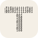

Rendered at the sizes browsers actually use. 16px is the browser tab — if a mark does not survive there, it is not a favicon.
| Binary TYour idea: a T spelled out in 1s and 0s. | |
16 |
 |
| Solid TThe plainest version. Survives anything. | 16243248 | ||
| Outline TThe hollow rule applied to the mark. | 16243248 | ||
| T with bitsSolid T with two bits knocked out of the stem. | 16243248 | ||
| One ZeroJust the two digits, no letter at all. | 16243248 | ||
| BarsThe current mark, for comparison. | 16243248 |